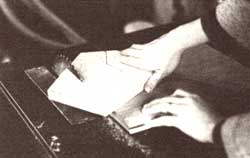

This inexpensive, homemade jig will overcome the problems encountered in woodworking when. . . .
After looking at the price and quality of most of the new toys available at nearby stores, I decided that my whole family would be much better off if I used my husband's table saw to make some wheeled push or pull playthings for our daughter. However, I soon discovered that it's not at all easy to cut perfectly round wheels!
At first, I tried using a jigsaw, but the task was both time-consuming and difficult . . . while slicing narrow rounds off of big dowels proved to be quite expensive. It also wouldn't be economical, I decided, to buy large-diameter hole saws or circle cutters for this limited application.
After some thought and experimentation, I came up with a table-saw jig, which-when used with caution-allows me to cut out circles of various sizes, down to a minimum of about six inches. The jig could also be used on a router/shaper table (as described in MOTHER N0. 61, page 160) to put a decor ative edge on the homemade wheels. Best of all, the device can be made from scrap wood and inexpensive parts that most folks probably have lying around their shops.
First, cut a piece of 3/4" plywood to about 12" X 18". Then cut another strip of wood to fit the miter groove of your saw. (Mine is 3/8" X 3/4" X 12".) Now, place the second strip in the slot . . . put the plywood on top of the strip (position it so the edge of the plywood runs parallel to the blade) . . . and nail, screw, or glue the plywood to the mitergroove strip.
Next, drill a series of 1/8" or 1/4" holes across the top of the plywood. (The distance from any particular hole to the saw blade will correspond to the radius of the circle you'll cut.) Countersink the holes on the mitergroove side of the plywood, and, finally, locate a 1/8" X 4" or a 1/4" X 4" stove or machine bolt, which you'll use to "lock" the stock to the jig to make a circle of a particular size.
To actually cut a disk, first find a piece of stock that's large enough (thickness doesn't matter) and drill a hole in the middle of it. Make sure the hole will slide over the machine or stove bolt but is small enough not to flop as the wood rotates around the bolt. Now, place the stock on the bolt at the appropriate hole on the jig, and place the jig in the miter groove of the saw. After making sure that the stock is not contacting the blade, turn on the saw.
At this point, you'll have to hold the stock firmly on the jig-and the jig firmly on the tablewhile you slide jig and stock forward smoothly until the wood has passed completely through the blade. Don't try to rotate the stock or lift the jig while the wood is contacting the saw blade!
When that's done, turn off the saw, bring the jig back to the beginning position, rotate the stock a bit around the stove bolt, turn the saw back on, and continue to repeat the above procedure until the circle is "roughed-out." Then slide the jig forward until the stock contacts the table-saw blade. Firmly hold the roughed-out circle and rotate it-very slowlyclockwise around the stove bolt. The saw blade will take off any high spots and leave a perfect circle that can be duplicated as many times as you wish.
Thanks to this little invention, our Emily plays with trains, rabbits, and trucks that were made with love, roll as smoothly as their plastic counterparts, and didn't cost a fortune! In addition, we've used the jig to make lowcost, attractive lamps, coasters, mirror frames, stool tops, and other projects that require true circles!
|
 Before you begin your cut, drill a hole in the stock, fit it over the bolt at the appropriate hole in the jig, and slide the jig stock forward smoothly until it has passed completely through the blade. |
To round out the edges of the ""roughed-out"" circle, slide the jig forward until the stock contacts the table-saw blade, andholding it firmly-rotate the circle slowly clockwise around the stove bolt. |
|